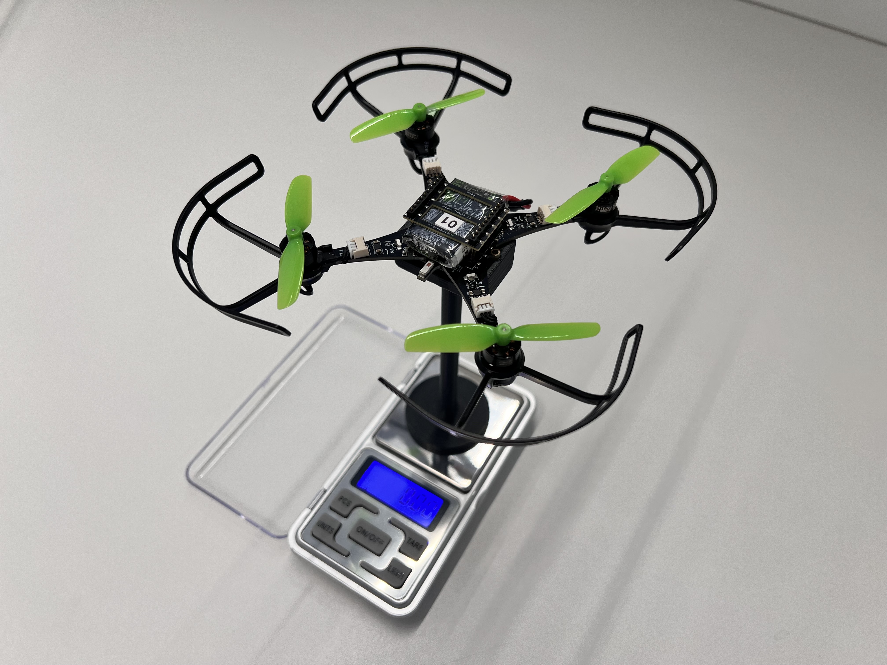
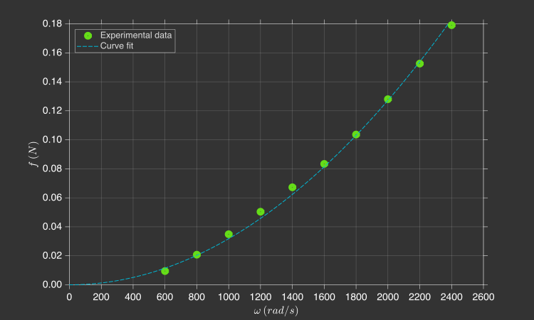

Thrust constant
In this section, you will experimentally determine the propeller thrust constant \(k_l\).
Theoretical background
The propellers of a quadcopter act as aerodynamic surfaces, accelerating the airflow through them. This process consumes energy from the batteries and generates both thrust forces and drag torques on the quadcopter. As previously derived, the thrust force \({\color{var(--c2)}f}\) produced by a propeller is proportional to the square of its angular velocity \({\color{var(--c1)}\omega}\).

Where \(k_l\) is the thrust constant (\(\text{N.s}^2\)).
Experimental procedure
You will measure the thrust force \({\color{var(--c2)}f}\) generated by the propellers using the thrust stand, a test fixture that holds(1) the quadcopter firmly above a scale, so the vertical force produced by the motors can be measured directly.
- To secure the quadcopter, slide it in from the side and fasten it using two screws.

From the scale reading, it is possible to determine the thrust force produced by the propellers. You can zero (tare) the scale with the quadcopter attached by pressing the TARE button. After that, any thrust generated by the propellers will appear as a negative reading on the scale.

You must upload to the drone a program that spins all four motors at a specified angular velocity. Data will be collected for 10 distinct angular velocity values. For each value, repeat the experiment three times and compute the average measurement.

To simplify the procedure, you can change the angular velocity using the Up and Down buttons in the Command Based Flight Control, located at the bottom-right corner of the Crazyflie Client.

Create a file named thrust_constant.c inside the src/identification folder with the following code (1):
- Do not forget to update the motor model coefficients \(a_2\) and \(a_1\) (lines 8–9) with your estimation.
| thrust_constant.c | |
|---|---|
1 2 3 4 5 6 7 8 9 10 11 12 13 14 15 16 17 18 19 20 21 22 23 24 25 26 27 28 29 30 31 32 33 34 35 36 37 38 39 40 41 42 43 44 45 46 47 48 49 50 51 52 53 54 55 56 57 | |
Follow the steps below to collect the experimental data:
- Ensure that the drone battery is fully charged
- Attach the drone to the fixture and zero the scale by pressing the T (tare) button
- Arm the drone by pressing the Arm button in the Crazyflie Client
- Set a specific angular velocity using the Command-Based Flight Control
- Record the value displayed on the scale
- Repeat steps 4–5 for different angular velocities
After completing the experiment, collect the data needed to fill in the table below.
| \({\color{var(--c1)}\omega}~(\text{rad/s})\) | \({\color{var(--c2)}W_1}~(\text{g})\) | \({\color{var(--c2)}W_2}~(\text{g})\) | \({\color{var(--c2)}W_3}~(\text{g})\) |
|---|---|---|---|
| \(600\) | |||
| \(800\) | |||
| \(1200\) | |||
| \(1400\) | |||
| \(1600\) | |||
| \(1800\) | |||
| \(2000\) | |||
| \(2200\) | |||
| \(2400\) |
Data analysis
Using the collected data, you should fit a curve relating the angular velocity \({\color{var(--c1)}\omega}\) with the thrust force \({\color{var(--c2)}f}\)(1) generated by a single propeller.
- Note that you must convert from grams (\(\text{g}\)) to newtons (\(\text{N}\)) and also divide by four, since the total thrust is shared equally by the four propellers.

Recall that the thrust force produced by a propeller is proportional to the square of its angular velocity:
Therefore, the most appropriate fitting model is a second-order polynomial whose constant and linear terms are zero. You should experimentally identify the thrust constant \(k_l\) from this curve fit(1). Record the obtained value, as it will be used in subsequent activities.
- Tip: use MATLAB’s Curve Fitting Toolbox.
Results validation
Compare your experimentally obtained value with the one previously estimated with a ruler in Exercise 1.4. The thrust constant \(k_l\) is expected to be on the order of magnitude of \(10^{-8}\,\text{N.s}^2\).